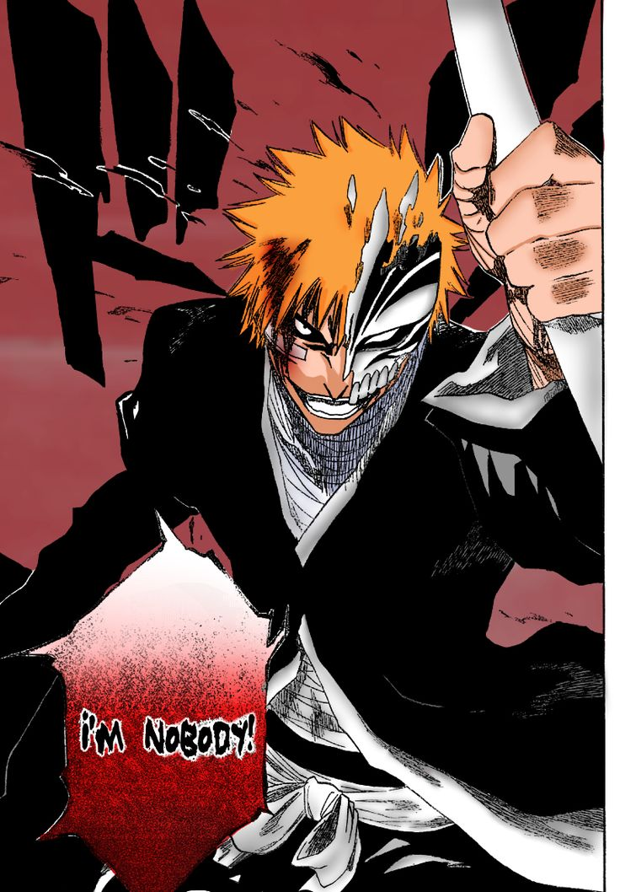

White / Hollow Ichigo
O Hollow interno de Ichigo é na verdade uma parte de seu poder.
Ele aparece com máscara branca e personalidade agressiva.
A versão Hollow de Ichigo representa a manifestação de seus poderes Hollow. Essa parte de seu poder surge diversas vezes durante sua jornada e se torna cada vez mais importante para sua evolução como Shinigami.
Ichigo possui dentro de si um poder Hollow que inicialmente aparece como uma personalidade agressiva e independente. Esse Hollow interfere nas batalhas e tenta assumir o controle do corpo de Ichigo.
No começo, Ichigo considera esse poder uma ameaça. Porém, com o tempo, ele aprende que o Hollow também faz parte de sua própria força.
Ichigo consegue utilizar uma máscara Hollow para aumentar temporariamente suas capacidades. Ao colocá-la, sua força, velocidade e energia espiritual aumentam bastante.

Em determinados momentos, o poder Hollow de Ichigo se manifesta de maneira muito mais intensa. Sua aparência muda, sua energia espiritual aumenta e seus instintos de combate ficam mais fortes.
Essa transformação demonstra que o poder Hollow dentro de Ichigo é muito maior do que ele imaginava.
O poder Hollow não existe completamente separado dos outros poderes de Ichigo. Mais tarde, ele descobre que sua origem está diretamente relacionada à sua mãe, Masaki, e à natureza de sua Zanpakutō.
Por isso, os poderes Hollow acabam sendo uma parte importante da verdadeira força de Ichigo.
Durante sua jornada, Ichigo passa de alguém que teme seu lado Hollow para alguém que entende e aceita essa parte de seus poderes.
Shinigami é a classe de seres à qual Ichigo pertence.
Um Hollow é uma criatura espiritual que normalmente ataca outras almas.
A Zanpakutō é a espada espiritual utilizada por Ichigo.
Início | Biografia | Poderes | Zangetsu | Bankai | Família | Arcos | Versão Hollow
O Hollow interno de Ichigo é na verdade uma parte de seu poder.
Ele aparece com máscara branca e personalidade agressiva.